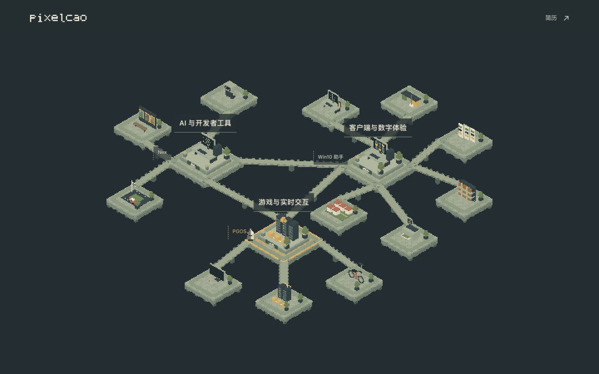
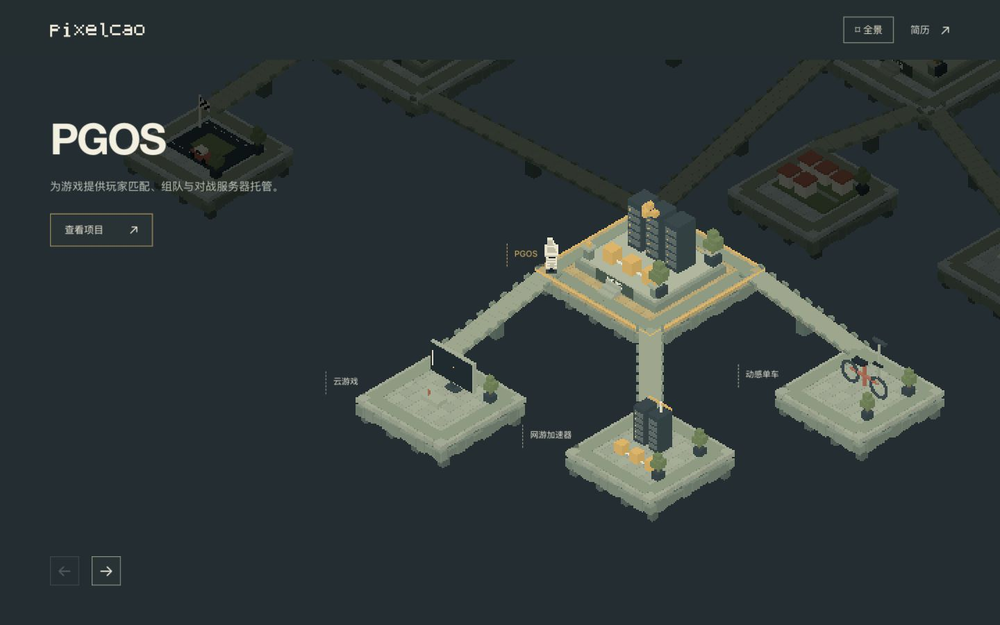
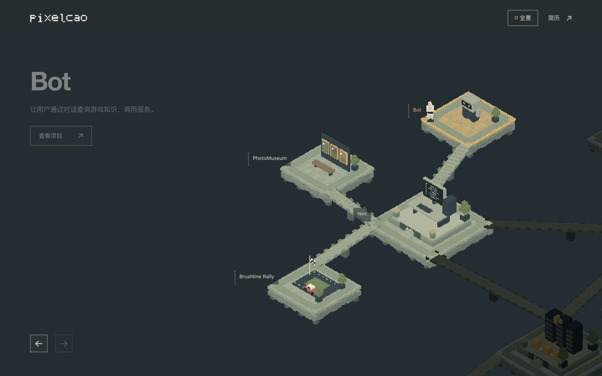
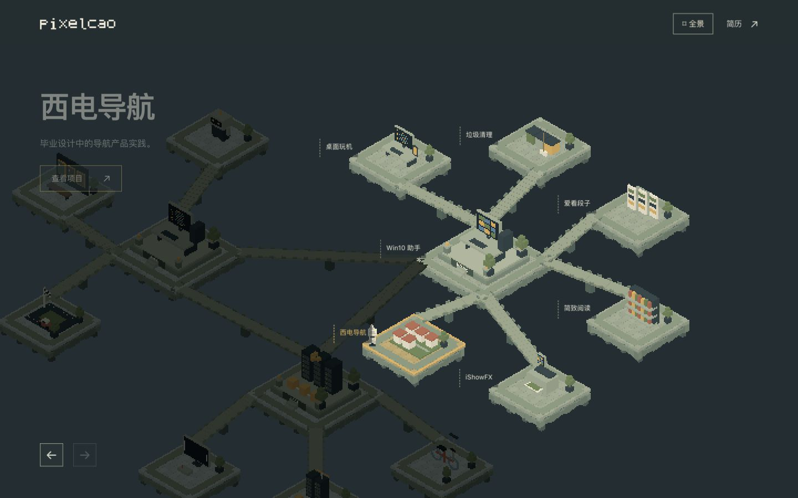
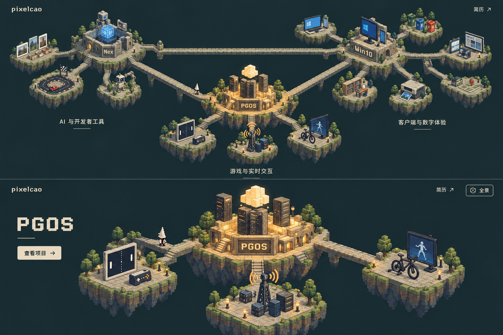
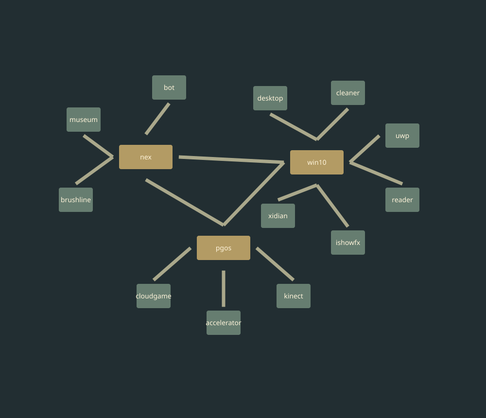
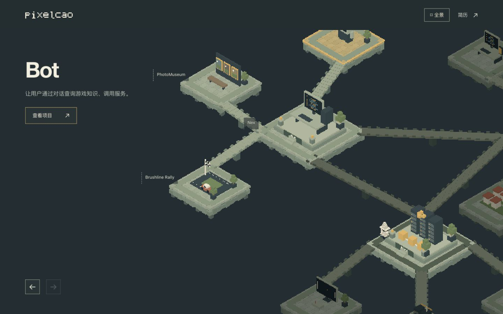
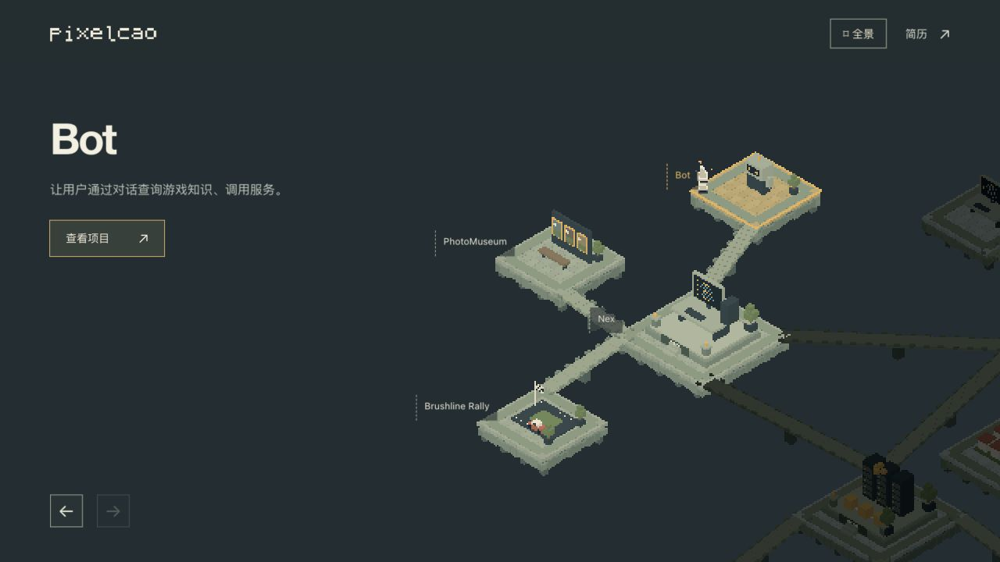

pixelcao · 三座主题岛群
完整地图 → 聚焦主题 → 旅人行走与施法 → 项目详情
打开展馆验收记录225 条路线核对交互记录ImageGen 提示词
实际页面

首屏完整地图，PGOS、Nex、Win10 助手作为主节点。
主题聚焦：主节点和三个子项目。
AI 与开发者工具
客户端与数字体验概念与真实路径

ImageGen 生成的构图和材质方向，并非页面截图。
旅程关键帧
行走、调整窗口、到达及重复施法的状态记录

跨区行走
抵达后施法门框展开响应式视口
全部项目详情
逐项访问记录 · 详情内原始素材保持清晰，视频静音自动播放。